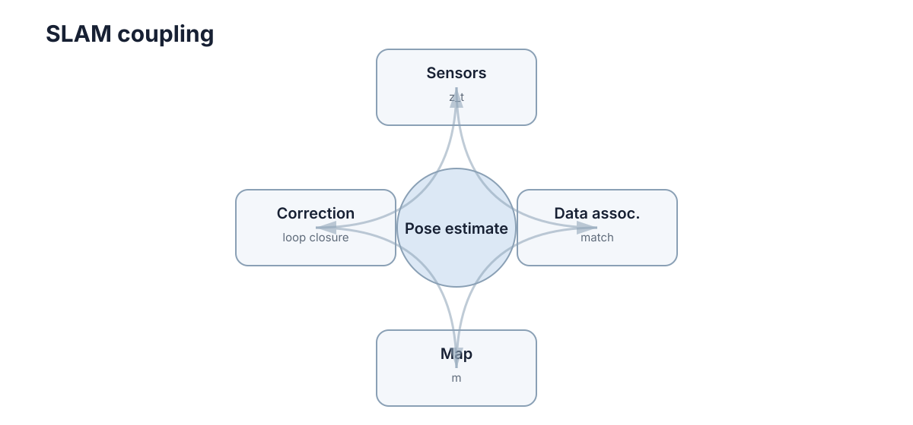

Mapping & SLAM
SLAM（Simultaneous Localization and Mapping）解决一个循环依赖：机器人需要地图才能知道自己在哪，但又需要知道自己在哪才能把观测放进正确的地图位置。 这个循环不能靠单次求解打破，只能靠“短时间尺度上足够准的局部估计 + 长时间尺度上的全局约束修正”两级结构来实现。

理解 SLAM 的关键不是某个算法，而是三件事的分工：前端负责快但会漂，后端负责准但很慢，闭环负责把两者接起来。 本章按这个结构展开，最后给出实机调试顺序。
里程计误差累积
假设每一步位姿增量都只有很小误差，连续累积几百、几千步后，位置和角度误差仍会越来越大。尤其角度误差会改变后续平移方向，使轨迹逐渐偏离真实路径。
这个累积不是线性增长。设第 \(k\) 步的角度误差为 \(\delta\theta_k\)，此后剩余行程长度为 \(L_k\)，则它造成的末端位置误差近似为
也就是说，越早出现的角度误差，被放大的行程越长。位置误差本身以随机游走方式累积（约与步数的平方根同阶），而角度误差通过上述机制带来与距离同阶甚至更强的漂移。这解释了一个常见现象：短距离内里程计看起来完全够用，走完一个长回路后地图却整体扭曲。
| 里程计来源 | 典型误差构成 | 主要退化场景 |
|---|---|---|
| 轮式编码器 | 轮径标定误差、打滑、地面不平 | 湿滑地面、急转弯、越障 |
| 视觉里程计 | 特征匹配误差、尺度漂移、运动模糊 | 纹理缺乏、快速旋转、强光 |
| LiDAR 扫描匹配 | 点云配准残差、时间戳偏差 | 长直走廊、开阔场地 |
| IMU 积分 | 零偏漂移、重力对齐误差 | 长时间运行、剧烈振动 |
因此 SLAM 不能只靠“上一帧到下一帧”的局部估计，还需要长期约束。
前端：局部运动估计与数据关联
视觉 SLAM 会从图像中找特征或直接利用像素信息，LiDAR SLAM 会做点云/扫描匹配。前端的任务是估计“我从上一时刻移动到了哪里”，并判断当前观测对应地图中的哪些结构。
前端输出快、频率高，但它本身无法避免长期漂移。它同时承担两件容易被混淆的工作：
- 运动估计：在已知数据关联的前提下，求解两帧之间的相对位姿；
- 数据关联：决定当前观测“属于”哪个已有结构或地图区域。
| 前端路线 | 代表做法 | 优势 | 主要失效模式 |
|---|---|---|---|
| 特征法 | 提取角点/描述子后匹配 | 对光照和尺度较稳定，易于剔除误匹配 | 弱纹理场景提取不到特征 |
| 直接法 | 直接最小化光度误差 | 弱纹理下仍可用，精度高 | 对光照变化、曝光敏感 |
| 扫描匹配 | ICP、NDT、相关性匹配 | 对结构化环境稳定，精度高 | 初值差时落入局部极小 |
真正拖垮 SLAM 的通常不是运动估计，而是数据关联错误：一个错误匹配会以约束的形式进入后端，让整条轨迹被“合理但错误”地拉扯。
后端：把整条轨迹写成优化问题
后端可以把机器人不同时刻的位姿作为节点，把里程计、扫描匹配和闭环关系作为约束。若两个时刻实际上处于同一地点，闭环约束会告诉优化器：这两个位姿应该重合或接近。
写成最小二乘形式，位姿图优化求解的是
其中 \(z_{ij}\) 是观测到的相对约束，\(e_{ij}\) 是它与当前估计之间的残差，\(\Sigma_{ij}\) 是该约束的不确定度（信息矩阵）。这个形式包含两个重要含义：
- 权重由不确定度决定：不可靠的约束权重低，闭环这类长期约束权重高，因此能主导全局形状；
- 误差在全轨迹重新分配：优化的结果不是简单修改当前位置，而是把误差在整条轨迹中重新分配，使所有约束尽可能一致。
| 后端形式 | 状态量 | 适用规模 | 特点 |
|---|---|---|---|
| 滤波（EKF-SLAM） | 当前位姿 + 全部路标 | 小规模 | 在线、增量；路标多时协方差矩阵增长快 |
| 位姿图优化 | 历史位姿 | 中大规模 | 可批量或增量求解，工程主流 |
| 全局 BA | 位姿 + 结构点 | 视觉系统 | 最精确但成本最高，通常分层使用 |
闭环检测与误匹配风险
机器人走一圈回到旧地点时，正确闭环可以显著修正漂移；错误闭环则会把两个不同地点强行拉到一起，导致地图整体变形。
因此闭环检测通常需要比普通帧间匹配更谨慎的验证，例如几何一致性、点云匹配得分或多帧确认。错误闭环往往比没有闭环更糟。
闭环检测本质上是一个二分类问题，两类错误代价完全不对称：
| 情况 | 后果 | 处理取向 |
|---|---|---|
| 漏检闭环 | 漂移不被修正，地图缓慢变形 | 可接受，误差有界 |
| 误检闭环 | 地图整体撕裂、轨迹跳变 | 通常不可恢复，必须严格抑制 |
因此实践中的参数调法是把阈值设得保守、用多帧一致性确认，而不是追求高召回率。若发现地图出现“整体折叠”或某段轨迹被强行拉直，第一嫌疑对象就是误检闭环，而不是后端优化器。
地图表示由任务决定
二维导航常用 occupancy grid；三维避障可能使用体素、点云或局部高度图；视觉系统还可能维护稀疏 landmark。地图不是越精细越好，分辨率越高意味着存储、匹配和更新成本也越高。
| 表示 | 典型用途 | 分辨率成本 | 主要局限 |
|---|---|---|---|
| Occupancy grid | 二维导航与路径规划 | 中（与面积成正比） | 难以表达三维结构和悬空障碍 |
| 点云 / 体素 | 三维避障、重建 | 高 | 内存增长快，需下采样 |
| 局部高度图 | 越野与不平地面 | 中 | 无法表达多层结构 |
| 稀疏 landmark | 视觉定位 | 低 | 只包含少量特征，不能直接规划 |
| ESDF / 距离场 | 规划与控制的安全裕度 | 高（需持续维护） | 建图与更新成本高 |
选择表示时应先问“下游要拿地图做什么”，而不是“哪种地图更完整”。定位需要的是可重复识别的结构，规划需要的是可查询的占据与距离信息，两者对分辨率的要求并不一致。
可观测性限制地图质量
某些运动和环境无法提供足够约束，例如长直走廊缺少横向特征、纯旋转难以恢复平移尺度。此时优化器无法凭空创造信息。
| 退化场景 | 缺失的约束 | 常见应对 |
|---|---|---|
| 长直走廊 | 沿走廊方向的横向与偏航约束 | 融合 IMU 或轮速，使用先验地图 |
| 纯旋转运动 | 平移尺度（单目）、基线 | 引入 IMU 或深度信息 |
| 开阔场地 | 远距离结构、特征 | 降低对几何约束的依赖，增强里程计权重 |
| 玻璃 / 镜面 | 有效的测距与特征 | 多传感器互补，主动剔除异常观测 |
识别退化场景并融合其他传感器，通常比继续调迭代次数更有效。传感器融合的价值主要体现在不同传感器在不同场景下退化方向不同：视觉在弱纹理下退化，LiDAR 在无结构环境下退化，IMU 在长时间下退化，它们失效的条件并不重合。
实机调试顺序
地图撕裂、轨迹跳变时，应先检查时间戳、TF、传感器外参和前端匹配；后端优化通常不是第一个怀疑对象。实机 SLAM 的大量问题来自坐标和数据关联，而不是优化公式本身。
| 现象 | 最可能原因 | 先验证什么 |
|---|---|---|
| 地图整体缓慢旋转 | 外参或时间戳存在固定偏差 | 打印 TF 与观测时间戳，检查偏置是否恒定 |
| 轨迹在固定位置跳变 | 误检闭环 | 关闭闭环重建，若恢复正常即确认 |
| 局部地图重影 | 数据关联错误或标定不准 | 观察重影是否随距离线性增大 |
| 走直线时地图弯曲 | 尺度或里程计标定问题 | 用已知长度路径做标定验证 |
| 转角后整体偏转 | 角度标定或时间戳延迟 | 对比不同转向速度下的偏差是否同向 |
推荐的固定排查顺序是：时间戳与 TF → 标定与外参 → 前端数据关联 → 闭环检测 → 后端优化。顺序颠倒会让人在公式层面反复修改一个其实由坐标系引起的问题。
下一步：地图建好之后，下一步是让机器人在其中移动。先看 Sensing & State Estimation 理解定位的观测来源，再看 Path & Motion Planning 与 Navigation & Control 把地图变成动作。时间戳与分布式时间同步的细节见 Time & Asynchrony，三维观测的处理见 Depth, 3D Vision & Point Clouds。